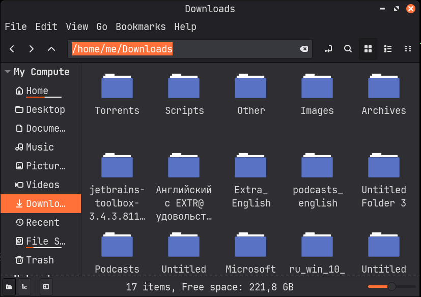

Cleaning the Chaos: Automating File Organization with Python
The "Downloads" folder inevitably turns into a "black hole" where documents, archives, and media blend into an endless list. To avoid wasting time on manual sorting, I developed a simple Python script to handle the heavy lifting.
This exercise allowed me to practice filesystem operations and bring a bit more order to my Linux Mint environment.
Project Sourse
The full implementation is available on GitHub: vvsparrow/file-sorter
Constructive feedback and suggestions are always appreciated as I continue my Python journey.

Linux Downloads folder full of cluttered files before automated sorting.My Technical Workflow
I utilized the pathlib library for a modern approach to path manipulation
and shutil for secure file transfers. The script analyzes file extensions
and assigns them to predefined categories.
Key Features:
- Multi-part Extension Support: The script correctly handles files
like
.tar.gzinstead of just looking at the final suffix. - Safety First: If a category folder doesn't exist, the script creates
it automatically using
mkdir(exist_ok=True).
The Script
import shutil
from pathlib import Path
CATEGORIES = {
"Images": [
".jpg",
".jpeg",
".png",
".gif",
],
"Documents": [
".pdf",
".docx",
".txt",
],
"Torrents": [
".torrent",
],
"Video": [
".mp4",
".m4v",
".avi",
".mov",
".mpeg",
".ts",
".mpg",
".vob",
],
"Scripts": [
".py",
],
"Archives": [
".zip",
".rar",
".tar.gz",
".7z",
".gz",
".tar",
],
}
directory_path = Path.home() / "Downloads"
for file in directory_path.iterdir():
if not file.is_file():
continue
target_category = "Other"
file_suffixes_combined = "".join(file.suffixes).lower()
file_suffix_single = file.suffix.lower()
for category, extensions in CATEGORIES.items():
if file_suffix_single in extensions or file_suffixes_combined in extensions:
target_category = category
break
target_folder = directory_path / target_category
target_folder.mkdir(exist_ok=True, parents=True)
destination = target_folder / file.name
try:
shutil.move(str(file), str(destination))
print(f"File: {file.name} | Category: {target_category}")
except (OSError, shutil.Error) as e:
print(f"Error moving {file.name}: {e}")
What I Learned
As an aspiring QA Engineer, this project was a practical step into automating repetitive tasks. Writing the script is only half the battle; understanding how to handle edge cases — such as files currently in use or duplicate names — is where the real learning happens.
My next milestone will be implementing Pytest to ensure that the sorting logic is robust and that no data is ever lost during the process. This "code-test-improve" cycle is exactly the mindset I’m developing for my future career in quality assurance.